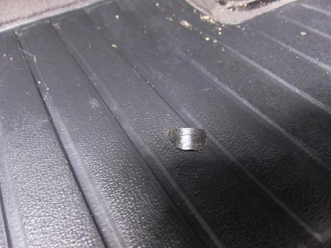
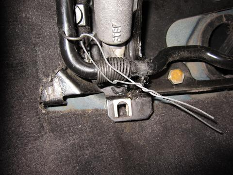
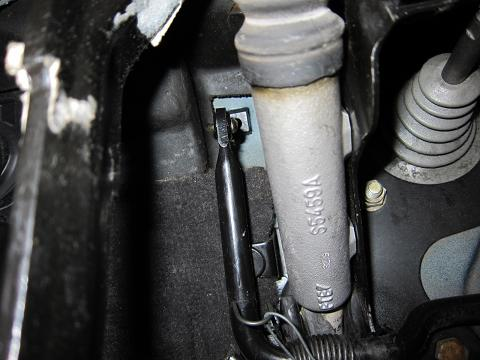
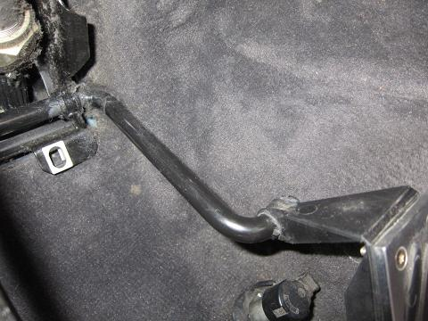
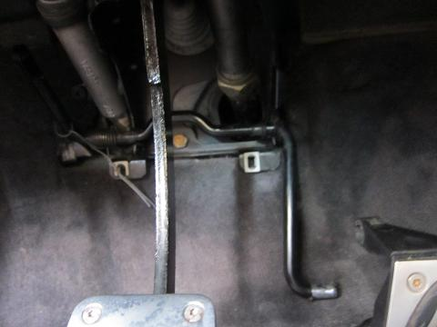
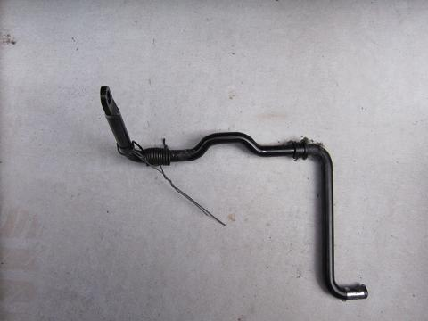
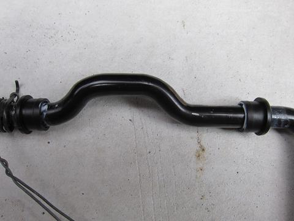
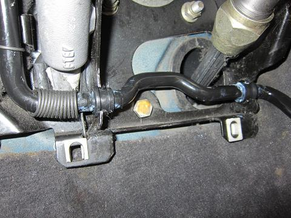
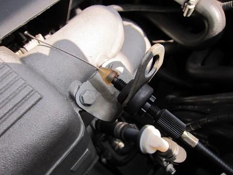

 ポロッ。。
なにか落ちてきた。朽ち果てたアクセルロッドのブッシュだ（笑） アクセルには調整機構は無い。どうやらコイツが原因のようだ。 |
 交換に作業に移ろう。 構造を見てみると、アクセルペダルが戻るようにスプリングでロッドにテンションがかかっている。
この手のスプリングは、いたずらに外すと装置する時に苦労する。 そこで、スプリングがテンションを保ったまま取り外せるよう、針がねで固定した。 |
  ワイヤーにつががるゴムブッシュ、アクセルペダルに刺さったロッドの２ヶ所を外す。
|
  アクセルペダル側は、ロッドが刺さっているだけなので引き抜けば取れる。アクセルペダルを外す必要は無い。
|
 ここに2つ付いている。 ブッシュは1つ100円とワイヤーと比べてリーズナブルだ。 ブッシュのパーツナンバーを記しておく。 35411154172 ブッシュは、柔らかいプラスチックなので、ロッドの90度に曲がった部分でも問題無く通過させることが出来る。
テンションの掛かったバネは、針がねで巻いたままにしておく。 |
 ブッシュが当たる部分にシリコングリスを塗り、ブッシュを装置して車両へ戻す。 針がねのおかげで楽々戻すことができた。 写真左側のブッシュはバネが近い為に、大きな圧力が掛かって破断してしまったようだ。
|
 交換後は調整しろがかなり増えた。 巷では、低燃費やアイドルストップが流行しているようなので、触ったついでにアイドリング時の回転数が300回転ほど下がるようセットしてみた。 高燃費車のささやかな環境への配慮だ（笑 アクセルを踏み込んでみると、とてもスムースだ。 「やっぱりBMWって運転する楽しさを考えて作られてるなぁ…」 と感じた。 調整しろが少ない場合には、ワイヤーを交換する前にブッシュを交換してみると良いだろう。 |